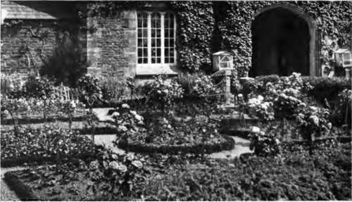

Chapter XV. Seasonal Effects With Flowers
Description
This section is from the book "Flower Gardening", by H. S. Adams. Also available from Amazon: Flower gardening.
Chapter XV. Seasonal Effects With Flowers
In the "Royall Ordering of Gardens," Bacon held that "there ought to be Gardens for all the Moneths in the Yeare: In which, severally, Things of Beautie may be then in Season".
Though the writer had princely magnitude in mind, this is a suggestion that might be carried out on a place of even moderate size without any appalling difficulties to overcome. All that is necessary is to pick out an even dozen spots on the home grounds and see that each has a dominant note characteristic of a certain month of the year. Geographical sequence is quite unimportant. Nor does it matter at all whether in each, or in any, case there is actually a garden. Thus a colony of snowdrops in a warm spot would not be too small to be called the February garden. It is no one's business but your own how much play you allow your imagination.
In a single garden, especially if it be of irregular design, it requires no great amount of ingenuity so to plant the plot that in every month of the year some one spot will have a glory unmistakably associated with it Or, where space and time at one's disposal are no barrier, a garden of the year could easily be created in the form of a wheel. The hub should be a good-sized pool, or bird bath, and from the path around it should radiate as many paths as there are months. A rim could be added if precise formality were desired, but very often spokes of unequal length would be better—and these need not always, or ever, be straight.
Such a garden would develop into a perfectly permissible, but rather foolish, fad if it were laid out with the idea that no path was to be a pleasant walk save in the month to which it is dedicated. The point is not that at all; it is simply that the April path shall savor so strongly of April as to make it that month's particular part of the garden.
The January path ought to be the way of approach. The chief reason is this: evergreens must be the seasonal note and by the use of these a permanently attractive entrance may be made. Moreover, their green will always be the best of frames for the color that the July path, directly opposite, will bring into the vista. The evergreens will have to spread into the February path on one side and the December path on the other. So long as it ceases to be dominant, the note may extend to any or all of the other paths.
It would be possible in a fairly cold climate, say southern New England, to have at least one disanguishing flower for each month. But this is a very pretty theory that may or may not come out all right in practice; it depends on the winter, and some other things* Snowdrops are rather reliable "Fair Maids of February," if they are planted where the snow is likely to melt soonest, and there is not only the witch hazel for November but a very tardy, and very tiny, hardy yellow chrysanthemum. December and January are the hardest months. The Christmas rose is only tolerably dependable; sometimes it comes into bloom in October. More likely to appear in either month is a stray pansy, California violet or "Johnny-jump-up," all of which need no more encouragement than a bit of a thaw.
Plant Christmas roses for December, "Johnny-jump-ups" for January and snowdrops for February, by all means, but for assured seasonal notes use, to again quote Bacon, "such Things, as are Greene all Winter." The red-cedar for its state-liness, would better be the note of the January path. Holly answers very well for December and the rhododendron for February. There is a fairly wide choice of both the narrow-leaved and broad-leaved evergreens, and this after rejecting any of doubtful hardiness.
March has the lovely blue of Scilla sibirica and glory-of-the-snow, as well as the bright yellow of Crocus Vernus to denote it. Usually the later white and purple crocuses can be counted on also.
Thenceforward, until November, choice may become a matter of preference; so many flowers are available.
"In June the rose comes first. A few kinds, planted separately, will give far and away the best results".
There is no reason why preference should be kept down to one. two or three kinds of flowers a month; almost any number may be employed, according to desire and opportunity. As a rule a path will yield the maximum of pleasure if the chief accent is brought about by one or two kinds. This accent need not be employed for the whole month; there can be one, say, for the early part of it and another for the latter part.
Thus April might disclose a drift of Arabis albida and another of Alyssum sax a tile as a striking early note, with a straggling patch of tulips of one color for later in the month. The two drifts may run into each other; but the third colony would better be some distance away and on the other side of the path. This is partly because the early note will probably not have disappeared when the later one comes on and partly because the isolation of the special pictures permits a wider range of color. In this case, for example, the arabis and alyssum are white and yellow; but pink or red could be used for the tulips.
May should have a marked fleur-de-lys note, first with the deep purple Iris pumila and later with one or two self-colored kinds of the germanica type. The Aubrietia deltoidea, Myosotis dissitiflora, Primula verts superb a, Doronicum caucasicum, columbine and late-flowering tulips are also good for accenting.
In June the rose comes first. A few kinds, planted separately, will give far and away the best results. But the June walk ought not to be without foxgloves, both pink and white,and a generous supply of Canterbury bells; use the pink, lavender or purple with the white. For the very end of the month, always, a clump of Lilium candidum.
July's path might have the tall blue larkspur and a colony of one of the several orange or yellow lilies of the month. And there are the Japanese iris and the Miss Lingard variety of Phlox suf-fruticosa, as well as the imposing hollyhock.
Continue to:
- prev: Spring And Summer Flowers From Bulbs. Part 3
- Table of Contents
- next: Seasonal Effects With Flowers. Continued